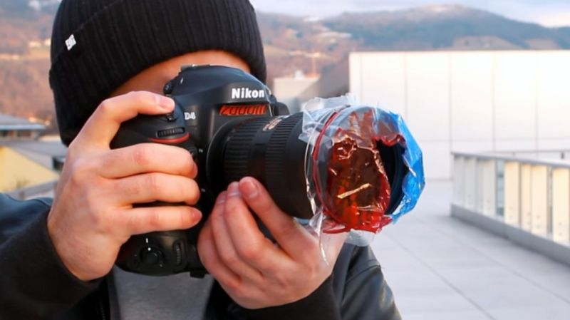
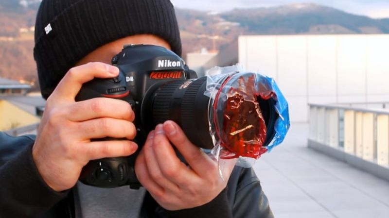
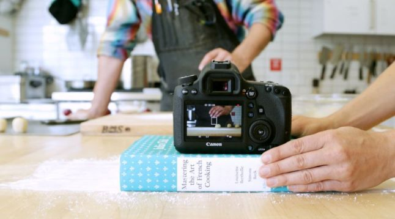
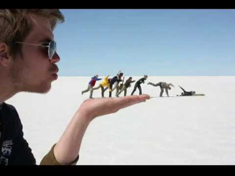

In humans, melanin is the primary determinant of skin color. It is also found in hairs, the pigmented tissue underlying the iris of the eye, and the stria vascularis of the inner ear. In the brain, tissues with melanin include the medulla and pigment-bearing neurons within areas of the brainstem, such as the locus coeruleus and the substantia nigra. It also occurs in the zona reticularis of the adrenal gland
Camera Trick:
Using the “A” or Aperture priority on your camera’s mode dial gives you control of depth of field. Aperture settings are measured in “F-stops.” One thing to note is the wider apertures actually have lower numbers, while the more narrow apertures have higher numbers. For example, a F2 has a wider aperture than an F22. A wider aperture decreases the depth of field in your shot making the background more blurred out, but keeping you subject in focus.

 


According to Ansel Adams,”a good photograph is knowing where to stand.” Turns out, it’s a bit more complex than that, but you don’t have to be an expert photographer to take meaningful photographs. Capturing moments with your camera has never been easier with the ever improving smart phone capabilities, apps, free photography sites and e-books. Whether you are striving for more impressive Instagram-worthy shots on your smart phone, or you are a DSLR photographer in the making, these tricks will help lead you down the road of picture taking mastery. FindOutMore
Best Shots:
1. Use the Aperture Priority mode to get those professional looking portrait shots with the out of focus background
2. Mix artificial and natural light for ideal city night shots
Time the taking of your images so that the light levels from each source (artificial and natural) is the same, which will produce an evenly exposed shot. Take a spot meter reading from both the sky and an area of the shot that’s well artificially lit. When the sky is still slightly brighter, start shooting using the spot metered setting for the artificially lit part of the scene. Continue to take pictures using the exposures. You should have a few shots that are perfectly exposed during the ten minute window where the scene will be perfectly lit.

FindOutMore
Editing Modes:
Inclusive
Photography apps on smart phones have come a long way. While smart phones don’t offer the professional capabilities of DSLR camera, you can still use these apps to help adjust and enhance your photos to take them to a new level.Two favorites are Camera Awesome (iphone and Android) and Camera + (iphone). Camera Awesome has an easy-to-set timer and burst feature. It also allows you to set ISO, white balance and exposure separately. FindOutMore
All About The Blog
Images
